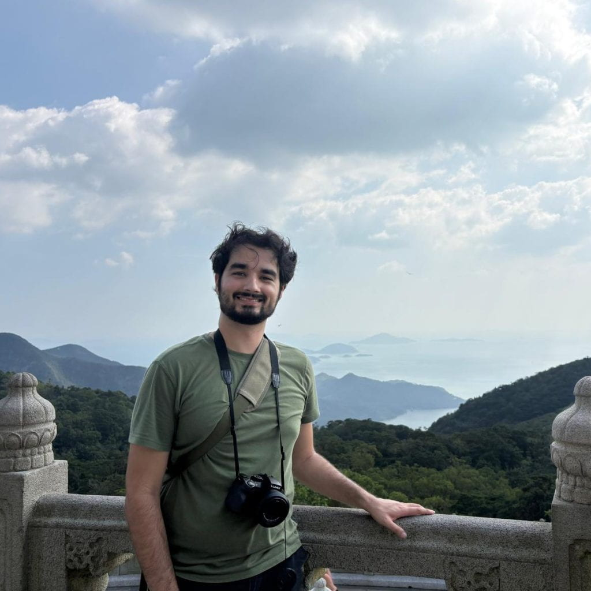

Hi! My name is Kalen. Welcome to my webpage!
I am a 5th-and-final year Ph.D. student at Georgia Tech in the Algorithms, Combinatorics, and Optimization (ACO) program, under the mentorship of Sahil Singla. In September 2026, I'll be starting a postdoc at EPFL hosted by Ola Svensson. My research is in online algorithms, and I am particularly interesting in online allocation problems, online rounding, matroids, and submodular functions.
This page is still under construction. Check back later for updates!